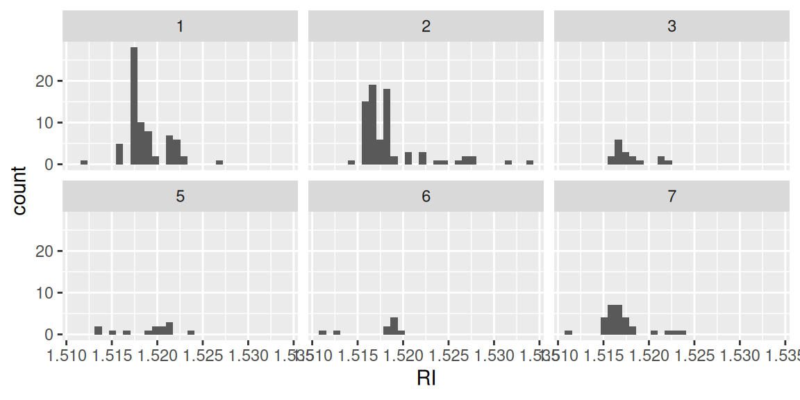
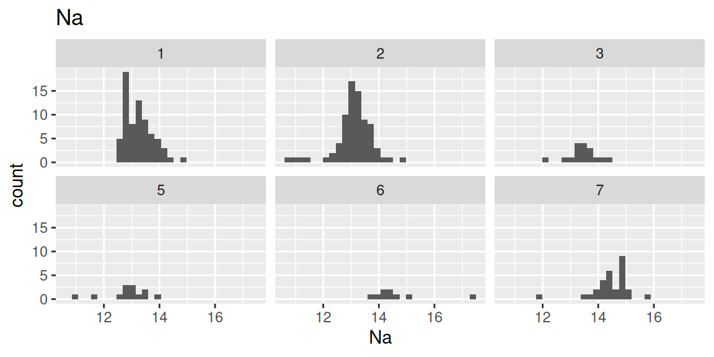
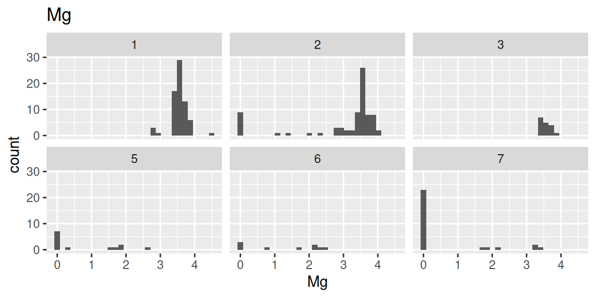
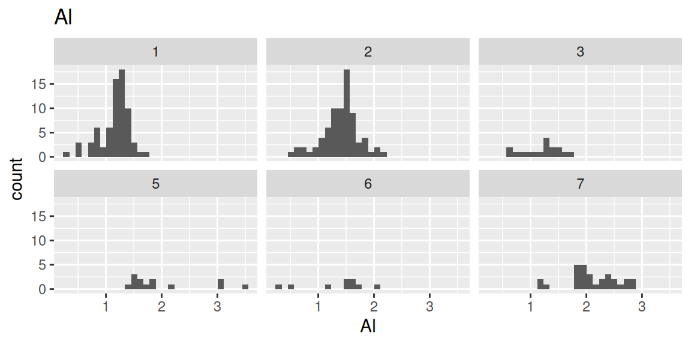
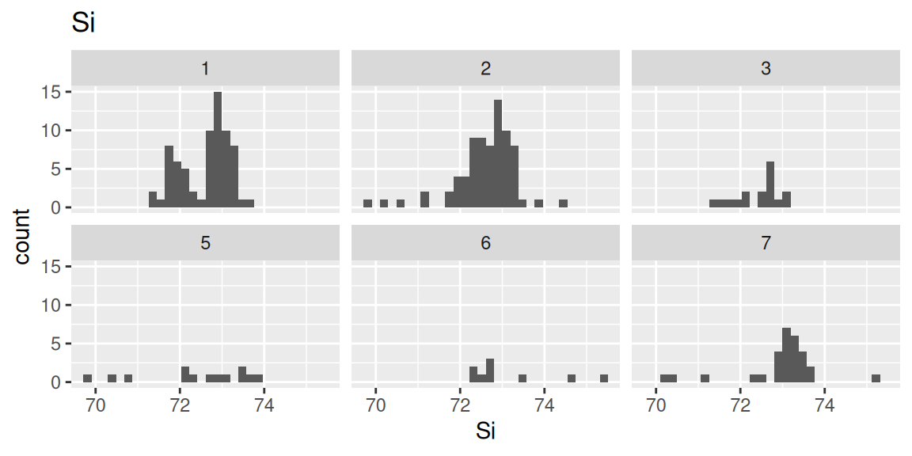
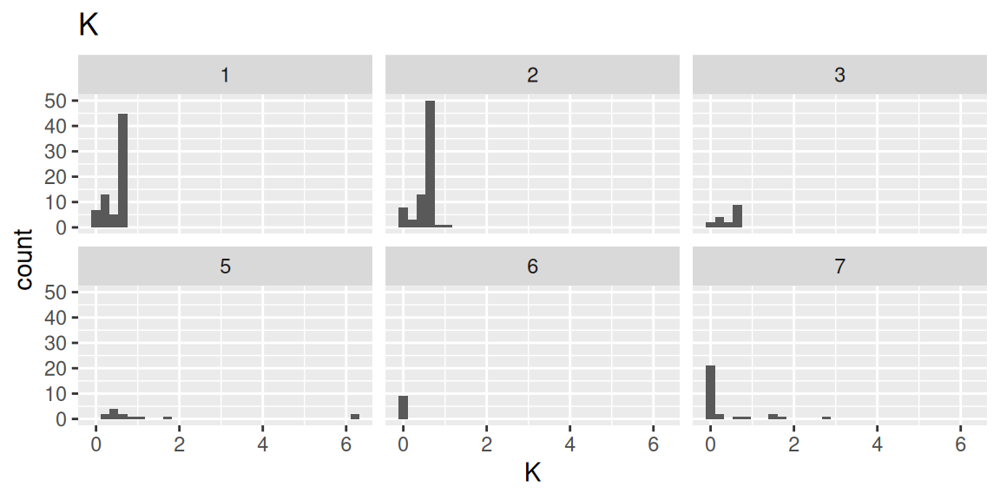
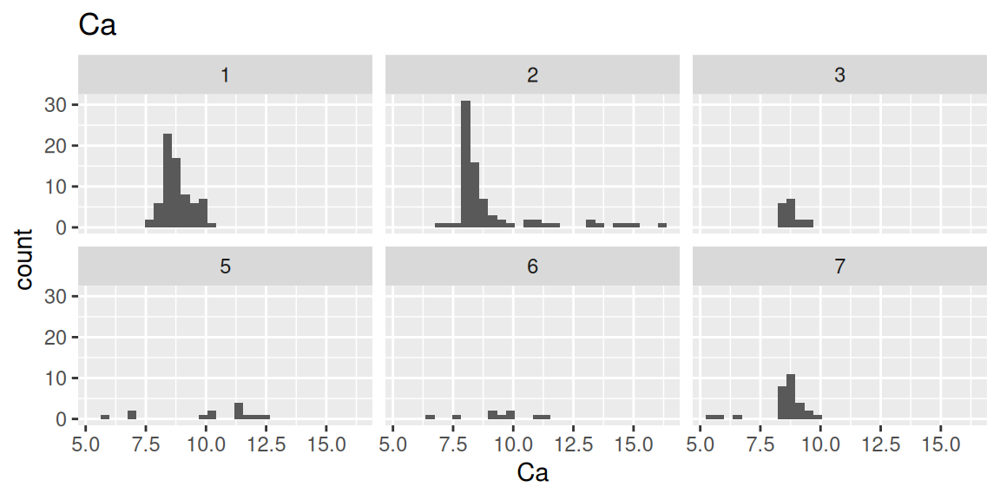
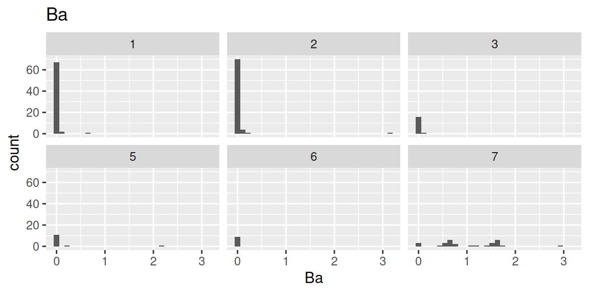
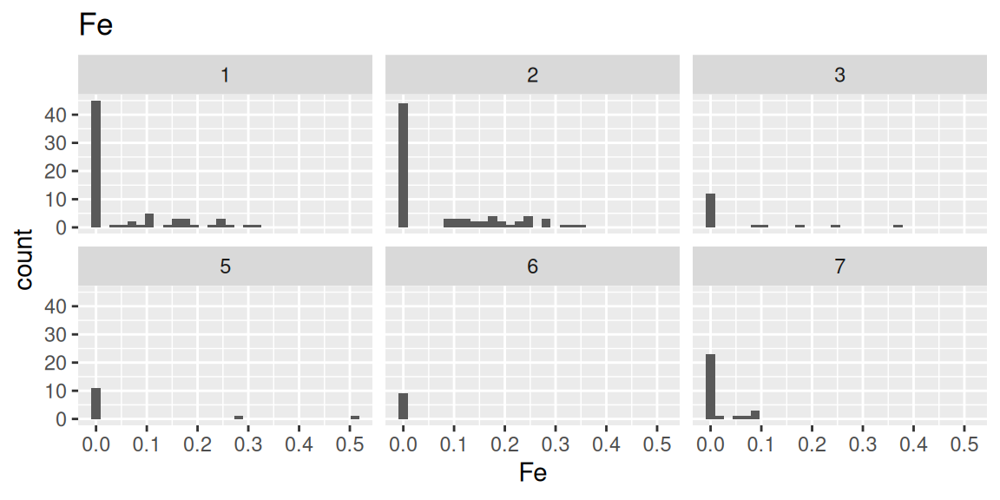

library(mlbench)
data(Glass)
df <- Glassclass
予測モデリング
パッケージの概要
classパッケージでは、k近傍法(knn法)を用いたクラスタリングを行うことができます。k近傍法とは分類問題に対する教師あり学習のアルゴリズムの一種で、予測したいデータに対しそのデータに”近い”上位k個の学習データを取得し、その学習データの分類の多数決を予測したいデータの分類とするものです。データ間の”近さ”、すなわち距離は適宜定義できますが、classパッケージのknn関数で使用される距離は標準的なユークリッド距離となります。
使用例：Glassデータの分類
mlbenchパッケージに含まれるGlassデータを用いて、ガラスの屈折率やガラスに含まれる各元素の含有割合からガラスの種類を分類する問題にk近傍法を適用します。
データの確認
Glassデータを読み込みます。
データの中身の確認です。（head）
head(df) RI Na Mg Al Si K Ca Ba Fe Type
1 1.52101 13.64 4.49 1.10 71.78 0.06 8.75 0 0.00 1
2 1.51761 13.89 3.60 1.36 72.73 0.48 7.83 0 0.00 1
3 1.51618 13.53 3.55 1.54 72.99 0.39 7.78 0 0.00 1
4 1.51766 13.21 3.69 1.29 72.61 0.57 8.22 0 0.00 1
5 1.51742 13.27 3.62 1.24 73.08 0.55 8.07 0 0.00 1
6 1.51596 12.79 3.61 1.62 72.97 0.64 8.07 0 0.26 1データの中身の確認です。（str）
str(df)'data.frame': 214 obs. of 10 variables:
$ RI : num 1.52 1.52 1.52 1.52 1.52 ...
$ Na : num 13.6 13.9 13.5 13.2 13.3 ...
$ Mg : num 4.49 3.6 3.55 3.69 3.62 3.61 3.6 3.61 3.58 3.6 ...
$ Al : num 1.1 1.36 1.54 1.29 1.24 1.62 1.14 1.05 1.37 1.36 ...
$ Si : num 71.8 72.7 73 72.6 73.1 ...
$ K : num 0.06 0.48 0.39 0.57 0.55 0.64 0.58 0.57 0.56 0.57 ...
$ Ca : num 8.75 7.83 7.78 8.22 8.07 8.07 8.17 8.24 8.3 8.4 ...
$ Ba : num 0 0 0 0 0 0 0 0 0 0 ...
$ Fe : num 0 0 0 0 0 0.26 0 0 0 0.11 ...
$ Type: Factor w/ 6 levels "1","2","3","5",..: 1 1 1 1 1 1 1 1 1 1 ...各変数の意味は以下の通りです。
| 変数名 | データ型 | 概要 |
|---|---|---|
| RI | num | 屈折率 |
| Na | num | ナトリウム含有量（%） |
| Mg | num | マグネシウム含有量（%） |
| Al | num | アルミニウム含有量（%） |
| Si | num | ケイ素含有量（%） |
| K | num | カリウム含有量（%） |
| Ca | num | カルシウム含有量（%） |
| Ba | num | バリウム含有量（%） |
| Fe | num | 鉄含有量（%） |
| Type | Factor | 目的変数（ガラスの種類） |
目的変数であるガラスの種類は以下となっています。 https://archive.ics.uci.edu/dataset/42/glass%2Bidentification
| Type値 | ガラスの種類 |
|---|---|
| 1 | 建築用窓ガラス（フロート加工） |
| 2 | 建築用窓ガラス（非フロート加工） |
| 3 | 自動車用窓ガラス（フロート加工） |
| 4 | 自動車用窓ガラス（非フロート加工）※データには含まれない |
| 5 | 容器用ガラス |
| 6 | 食器用ガラス |
| 7 | 照明用ガラス（ヘッドランプ） |
summaryを表示します。
summary(df) RI Na Mg Al
Min. :1.511 Min. :10.73 Min. :0.000 Min. :0.290
1st Qu.:1.517 1st Qu.:12.91 1st Qu.:2.115 1st Qu.:1.190
Median :1.518 Median :13.30 Median :3.480 Median :1.360
Mean :1.518 Mean :13.41 Mean :2.685 Mean :1.445
3rd Qu.:1.519 3rd Qu.:13.82 3rd Qu.:3.600 3rd Qu.:1.630
Max. :1.534 Max. :17.38 Max. :4.490 Max. :3.500
Si K Ca Ba
Min. :69.81 Min. :0.0000 Min. : 5.430 Min. :0.000
1st Qu.:72.28 1st Qu.:0.1225 1st Qu.: 8.240 1st Qu.:0.000
Median :72.79 Median :0.5550 Median : 8.600 Median :0.000
Mean :72.65 Mean :0.4971 Mean : 8.957 Mean :0.175
3rd Qu.:73.09 3rd Qu.:0.6100 3rd Qu.: 9.172 3rd Qu.:0.000
Max. :75.41 Max. :6.2100 Max. :16.190 Max. :3.150
Fe Type
Min. :0.00000 1:70
1st Qu.:0.00000 2:76
Median :0.00000 3:17
Mean :0.05701 5:13
3rd Qu.:0.10000 6: 9
Max. :0.51000 7:29 データの可視化
データの可視化として、ヒストグラムを確認してゆきます。
library(ggplot2)屈折率のヒストグラムをガラスの種類別に確認します。
ggplot(df, aes(x = RI)) +
geom_histogram(bins = 30)+
facet_wrap(~Type)
各元素の構成割合のヒストグラムをガラスの種類別に確認します（コードはNa（ナトリウム）のみ表示）。
ggplot(df, aes(x = Na)) +
geom_histogram(bins = 30) +
facet_wrap(~Type)+
labs(title = "Na")







モデル構築
k近傍法でのクラスタリングを試してみます。まずはデータを訓練用データとテストデータに分割します。
# シードを設定
set.seed(123)
# データの分割
sample_indices <- sample(1:nrow(df), 0.7 * nrow(df))
df.train <- df[sample_indices, ]
df.test <- df[-sample_indices, ]
# データサイズの確認
c(nrow(df), nrow(df.train), nrow(df.test))[1] 214 149 65RIとそれ以外とでデータの性質が異なるため、まずはRIのみでモデリングを行います。多数決をとるkを変えてモデルの変化を見てみます。モデル性能の確認にはcaretパッケージのconfusionMatrix（混同行列）を使用します。
library(class)
library(caret)Loading required package: latticepred1 <- knn(df.train[1], df.test[1], df.train$Type, k = 2)
cm1 <- confusionMatrix(pred1, df.test$Type)
pred2 <- knn(df.train[1], df.test[1], df.train$Type, k = 4)
cm2 <- confusionMatrix(pred2, df.test$Type)
pred3 <- knn(df.train[1], df.test[1], df.train$Type, k = 6)
cm3 <- confusionMatrix(pred3, df.test$Type)混同行列と精度を確認します。
print(cm1$table) Reference
Prediction 1 2 3 5 6 7
1 16 2 3 0 2 3
2 4 14 3 0 2 2
3 0 0 0 0 0 1
5 1 2 0 0 0 0
6 1 0 0 1 0 1
7 0 4 1 1 0 1print(cm2$table) Reference
Prediction 1 2 3 5 6 7
1 15 2 3 1 3 2
2 5 13 2 0 1 3
3 0 1 0 0 0 1
5 0 1 0 1 0 0
6 1 0 1 0 0 1
7 1 5 1 0 0 1print(cm3$table) Reference
Prediction 1 2 3 5 6 7
1 15 2 2 1 3 2
2 4 17 3 0 1 4
3 1 0 0 0 0 0
5 0 0 0 0 0 1
6 1 0 0 0 0 0
7 1 3 2 1 0 1print(cm1$overall[1]) Accuracy
0.4769231 print(cm2$overall[1]) Accuracy
0.4615385 print(cm3$overall[1]) Accuracy
0.5076923 RI以外、すなわち各元素の構成割合によるモデリングも確認します。こちらの方が幾分精度がよいです。
pred4 <- knn(df.train[-1], df.test[-1], df.train$Type, k = 2)
cm4 <- confusionMatrix(pred4, df.test$Type)
pred5 <- knn(df.train[-1], df.test[-1], df.train$Type, k = 4)
cm5 <- confusionMatrix(pred5, df.test$Type)
pred6 <- knn(df.train[-1], df.test[-1], df.train$Type, k = 6)
cm6 <- confusionMatrix(pred6, df.test$Type)print(cm4$table) Reference
Prediction 1 2 3 5 6 7
1 22 0 0 0 0 0
2 0 22 0 0 0 0
3 0 0 7 0 0 0
5 0 0 0 2 1 2
6 0 0 0 0 3 1
7 0 0 0 0 0 5print(cm5$table) Reference
Prediction 1 2 3 5 6 7
1 22 1 0 0 0 0
2 0 21 0 0 0 0
3 0 0 7 0 0 0
5 0 0 0 2 2 1
6 0 0 0 0 2 1
7 0 0 0 0 0 6print(cm6$table) Reference
Prediction 1 2 3 5 6 7
1 22 1 0 0 0 0
2 0 21 0 0 0 0
3 0 0 7 0 0 0
5 0 0 0 2 1 1
6 0 0 0 0 1 0
7 0 0 0 0 2 7print(cm4$overall[1]) Accuracy
0.9384615 print(cm5$overall[1]) Accuracy
0.9230769 print(cm6$overall[1]) Accuracy
0.9230769